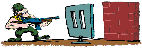

DIES IST DAS ZENTRALE RÄTSEL DER QUANTENWELT: >>>

Phil-Splitter >>>
ABCphilDE >>>
Herok.info >>>
Kunst&Wahn >>>
Hegel - Philosophen >>>
[Home] [sartre] [Demokrit] [poe] [Hegel/Mysterium] [glaube] [Schelling] [tao] [Auge/Escher] [Garten Eden] [Spinoza] [HEGEL] [nous] [PAULUS] [Descartes] [Subjekt] [phil] [Hegel] [Hegels Ferien] [Kunst und Wahn]
manfred k.w.herok 2004 - 14